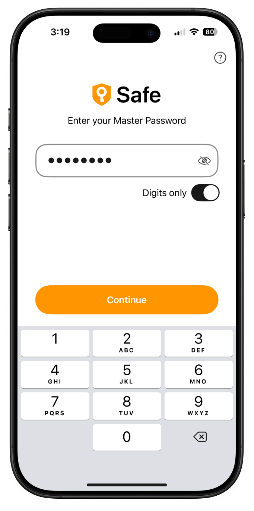
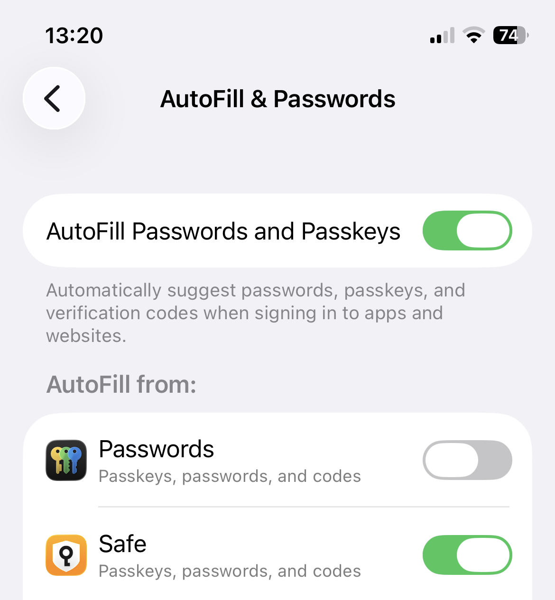

那天在便利店刷不出卡，我才意识到密码这件事不能再拖了
一个普通上班族在便利店购物时遭遇支付困境，由此开启了用密码管理器整理全部敏感信息的旅程——从浏览器自动填到多设备云同步，从银行卡片到证件笔记，用三个月时间彻底告别混乱。
地铁站口的尴尬时刻
去年深秋的一个早晨，我在二号线转十号线的那家便利店排队买咖啡和饭团。轮到我扫码付款的时候，手机上跳出一个我从未见过的支付确认页面——那天 Apple Pay 出了点小问题，系统要求我手动输入完整的信用卡号。
我站在收银台前，脑子一片空白。那张卡的十七位数字我当然背不下来，CVC 三位数更是连想都别想。后面排了七八个人，我假装在包里找卡，其实是在疯狂回忆：我的银行卡号到底存哪儿了？
浏览器里有一版——但前阵子刚看到新闻，说某主流浏览器的密码同步机制存在泄漏风险，我当时就把所有自动保存的密码清了。OneNote 里好像写过一遍？翻了三分钟没找到。手机备忘录里肯定有，但我给备忘录加了密码锁，而那个密码……我又记成另外一组了。
最后还是同事从后面递过来他的卡："刷我的，回头转你。"我脸烧得能煎鸡蛋。
朋友扔给我一个链接
午休的时候我坐在茶水间啃饭团，跟邻座的老张吐槽了这件事。老张在公司做运维，手上管着各种服务器密码，对安全这事儿特别较真。听完我一通抱怨，他手机屏幕一亮，扔给我一个链接。
"试试这个。我全家都在用，两台电脑三部手机，同步了快两年没出过问题。"他说，"密码这玩意儿不是记不住，是你没给它找对地方。"
我扫了一眼SafeInCloud官网的介绍——AES-256 加密、多平台支持、云同步走自己的 Google Drive 或 OneDrive。说实话，密码管理器这个品类我之前一直觉得是"给安全强迫症准备的"，正常人哪用得着那么麻烦。但那天早上的尴尬劲还没过去，我点进去，花了十分钟把主密码设好，第一次打开了那个空空如也的加密保险库。
搬进去的第一周：浏览器、邮箱、信用卡
第一个晚上我坐在电脑前，开始清点自己到底有多少敏感信息。结果吓了一跳——光是常用的邮箱、网购账号、银行网银这些加起来就有四十多个，每一个的密码我之前要么写在便签上贴显示器旁边，要么用"生日加手机号"这种万能模板糊上去。
安装过程出奇地顺滑。桌面端从SafeInCloud下载下来是个不到二十兆的小文件，安装完第一次启动就弹出引导向导，帮我把浏览器里还没清干净的密码一条条导了进去。我在手机上也装了一份，同一个主密码解锁，两边的保险库文件通过我自己的 OneDrive 账户同步——数据上传前就已经在本地加密好了，云盘里存的只有加密后的文件本体，连 OneDrive 自己都看不懂里面是什么。

银行卡是第二个重点。Safe 里内置了专门的银行卡卡片模板，不是普通的登录条目硬改的，字段都预设好了：持卡人姓名、卡号、有效期、CVC、PIN 码，甚至还有发卡行和备注。我把三张信用卡两张储蓄卡的信息一张张录进去，卡号和 CVC 默认都是隐藏显示的，要点击才看得见——这一点我特别喜欢，防止旁边有人瞟一眼就记下了。
录完最后一张卡已经快凌晨一点。我躺在床上想，这些信息以前散落在便签、浏览器缓存、备忘录、Excel 表格里，现在全部安安稳稳地待在一个地方，用同一把锁锁着。这种感觉很微妙，像是把家里所有贵重物品从鞋柜、抽屉、旧书包里找出来，统一放进一个带密码锁的保险箱。
日常使用里那些让我惊喜的细节
真正让我觉得"这钱花值了"的，是后面几个月里慢慢发现的小功能。
手机上的自动填充配置，iPhone 和 Android 完全是两套路数。iOS 那边简单得离谱，我打开系统设置，找到"密码 → 自动填充密码"，把 Safe 的开关打开就完事了。Safari 里访问任何登录页面，输入框上方会自动出现钥匙图标，点一下就能从保险库里挑条目填进去，Face ID 验证完身份就自动完成，全程不用切换 App。Android 稍微麻烦一点，系统级和浏览器级要分开设置，但也就多花两分钟，之后在 Chrome 里体验一样顺畅。

云同步这块我踩过一个坑。有一次我在电脑上改了主密码，手机上没同步，结果打开 Safe 直接弹出"密码不匹配"警告。当时慌了一下，以为数据丢了。后来去中文文档翻了一下，解决流程挺简单：手机上卸载 Safe → 重新安装 → 启动时选"从云恢复保险库" → 输入新密码。五分钟就搞定了，数据一根毛都没丢。那次之后我养成了一个习惯：改主密码前先在另一台设备上登进去确认一下，省得两边密码不一致。
还有那个浏览器扩展。装完之后它会自动检测当前页面有没有匹配的密码条目，有的话地址栏旁边亮个小图标，一键填充用户名密码。更妙的是支付场景——上次在亚马逊买东西，结账页面刚加载出来，扩展就提示我保存的那张 Visa 卡可用，点一下卡号、持卡人姓名、有效期直接填进对应的框里，CVC 要手动输入。我后来才知道这是故意设计的，CVC 永远不会自动填，因为那是只有拿着实体卡才能看到的信息，就算保险库被破解了，攻击者也拿不到 CVC。
三个月后的变化
三个月过去了。我的保险库里现在有六十七张卡片：登录条目四十八张、银行卡五张、身份证护照各一张、常用地址和备注若干。主密码我选了一个十六位的词组加数字组合，记在脑子里，不写任何地方。手机锁屏用 Face ID，Safe 本身也开了生物识别解锁——平时打开 App 扫一下脸就行，偶尔 Face ID 识别不了（比如口罩戴得严严实实的时候），输入主密码解锁。
那天在便利店刷不出卡的场景再也没发生过。上周五出差订机票，酒店登记、机场 Wi-Fi、租车平台的登录全部自动填充，银行卡信息在支付页直接弹出来。我同事老张听说我也在用，笑着说："早跟你说了吧，密码这事儿不能靠脑子记。"
现在我偶尔会打开 Safe 的官网翻看一下，看看有没有新功能更新。也常去它的中文文档里查一些边角功能——比如怎么创建额外的保险库给家人用、怎么把某张卡片分享给信任的人。这款软件在国内直接就能用，不用翻墙，云同步也支持国内访问稳定的服务。
如果你也像我之前那样，密码东一个西一个记不住，浏览器自动填又不敢放心用，不妨试试这个方向。选一个靠谱的密码管理器，花一个晚上把散落的敏感信息归拢到一个地方，然后让它帮你在日常里省心——这点时间投资真的值得。我用的这套资料在三个仓库都能拿到，从文档维护到备份分发各有侧重：GitHub是主仓库，Gitee对国内访问更友好，GitCode做了额外一份备份以防万一，直接搜软件名就能找到对应目录。